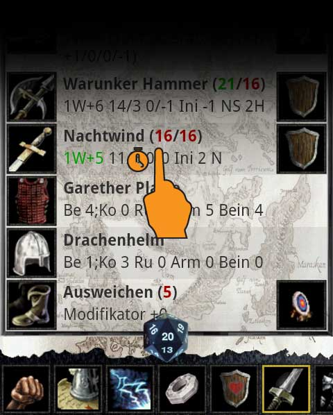

Manche Waffen verfügen über unterschiedliche Varianten (ein-/zweihändig, Wurfwaffe/Nahkampf). Um zwischen den Varianten zu wechseln klick in der Kampfübersicht lange auf den Eintrag, falls ein Menü erscheint verfügt die Waffe über Varianten und du kannst zwischen ihnen wechseln.
